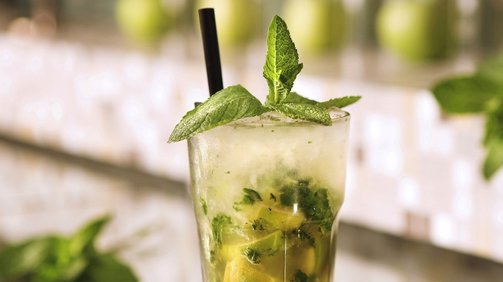
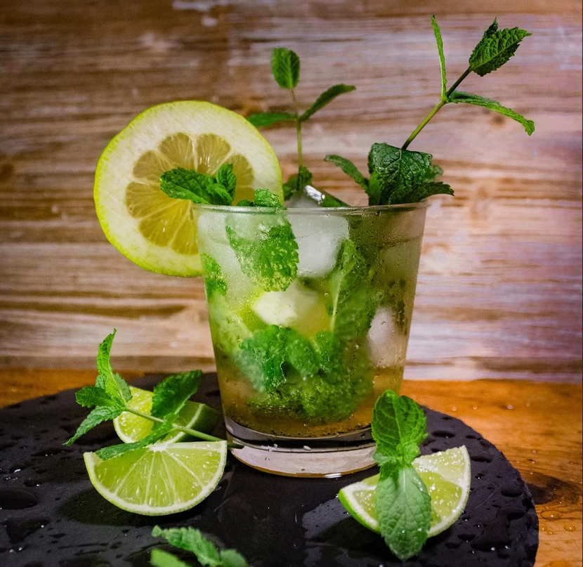
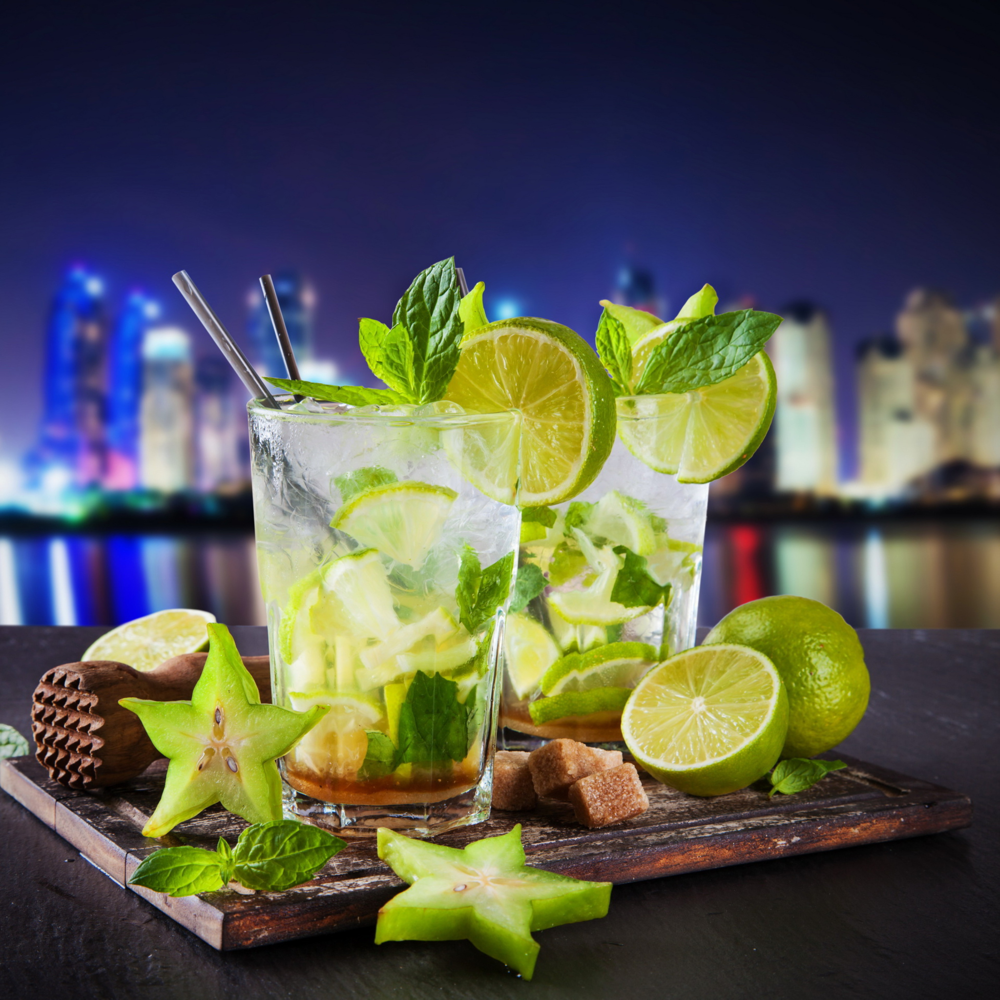

Мохито
- лайм (в крайнем случае, лимон) – 1 штука
- белый ром – 30 мл
- содовая (спрайт) – 60 мл
- сахар (желательно тростниковый) – 1 столовая ложка
- свежая мята – 5-6 листиков
- кубики льда – 100 грамм

История создания
Коктейль «Мохито» является усовершенствованной версией напитка «Драк», рецепт которого придумал известный пират Ф. Дрейк. Морские разбойники настаивали ром на лайме и мяте. Полученный напиток помогал им бороться с инфекционными заболеваниями в морских походах.
В 1942 году семейство Мартинес открыло в Гаване собственный бар La Bodeguita del Medio. Главной изюминкой заведения стал коктейль «Мохито» (с испанского слово mojito переводится как «немного влажный»), который отличался от пиратского рецепта одним дополнительным ингредиентом – газировкой (содовой). Вкусный умеренно крепкий коктейль быстро стал популярным и распространился по всему миру, а бар Мартинесов успешно работает до сих пор.
Способ приготовления
1. Разрезать лайм пополам и руками выдавить в стакан сок из одной половинки. Добавить сахар.
2. Мелко нарезать мяту и положить в стакан с соком лайма. Измельченные листики истолочь деревянной колотушкой или обычной ложкой. Для красоты можно добавить еще несколько целых листиков мяты.
3. Доверху наполнить стакан кубиками льда.

4. Добавить 30 мл рома.
5. Всё оставшееся в стакане пространство заполнить содовой (спрайтом).
6. Подавать вместе с трубочкой.
Как пить мохито
Особого этикета распития у Мохито нет. Обычно этот хорошо охлажденный кубинский коктейль подают с трубочкой, вследствие чего его пьют небольшими глотками, стараясь уловить нотки вкуса и утолить жажду.
В большинстве случаев закуска будет лишней, поэтому вопрос, с чем пить Мохито, даже не ставится. Дело в том, что к легкому освежающему коктейлю сложно найти подходящее блюдо, куда лучше наслаждаться им в чистом виде.
